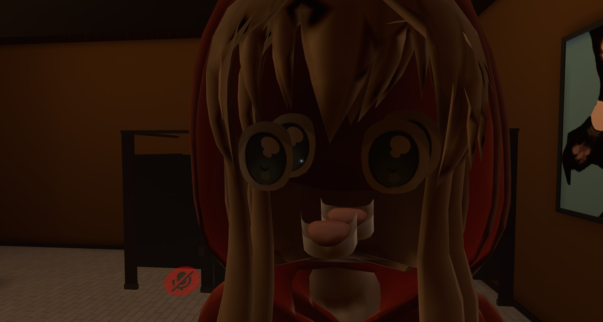

Hello anyone who has stumbled upon this page, my name is Michael Irlandez,
a first year at RMIT, studying for a Bateleurs degree in Information technology.
The secondary school that I attended was Rosehill Secondary Collage, in Niddrie.
I am currently 18 years old (2021) birthday on the 2nd of December. I am 7/8ths
Filipino and 1/8 Torres Strait Islander. My parents speak Tagalog
(the language of the Philippines), I never learnt how to speak it,
Intersting fact about me
One somewhat interesting thing about me is that I collect Yu-Gi-Oh! Cards.
I haven’t competed in any sort of official tournaments or anything, but I have
considered it in the past.I only recently started collecting again in 2019 and
now, its almost a problem… at least I don’t need to worry about paying rent or buying
food, living with my mum and all (for now).
Where'd my inerest in IT come from?
My interest in IT was mainly born out of an excessive amount of video games,
mainly the process in building computers was the main draw
(I love opening up my laptop for no reason just to look at the internal components).
The interest only grew when in year 9 in secondary, IT was an elective, basic programming
in Microsoft basics 2010 and basic data base stuff in excel was super interesting to me and thus
it became something I wanted to pursue a career in.
What pushed me to choose IT in year 9
was a small school holiday class that I attended in year 8, where I made a basic calculator app
on an iPhone.The background of the app was a blown-up image of the Pokémon Gengar and it could perform
basic mathematical functions. Seeing the workings of such a basic app got me quite interested in how computers worked.
Why come to RMIT?
RMIT was recommended to me through one of my school’s carrier advisors, and choosing the Royal Melbourne Institute of Technology to study IT, seemed like a no brainer.
Knowing what subjects, I’m studying at RMIT, Introduction to Programming and information technology, user centred design and practical database concepts,
I expect that I will know the basics of both python and SQL, while also being able to create a user friendly design for either an application or infographic and,
from the way this class is going, I’m hoping to learn the basics in HTML, and possibly other programming applications, possibly the unity game engine, if were given time to learn our own thing for future projects.
My Ideal Job
My dream job would ideally be nothing, making smart investments in certain companies so that I don’t need to work, or at least that would be the dream. But when it comes to a dream job in the IT industry,
it would have to involve some sort of development of some kind, as I don’t think I would handle the more database related stuff too well.
Seeing jobs that are IT related on the website I3 consulting,
the most appealing IT jobs seem to be ones that involve being on an IT help desk.
The main reason why these seem so appealing to me are due to them involving having a wide number of technical skills, which would be appealing to build towards,
where I would eventually proficient in the use of lots of different software’ (common between IT consultant jobs is the proficient in the Microsoft office suite).
Along with this, having to be able to solve the issues that others bring to me, will make the work I do both engaging, requiring a decent amount of thought, while also being helpful to others,
as I would solve their issues.
I3 consulting job advertisement on Seek had a requirement of 3 years of experience which I would like to eventually obtain through any way I can, possibly through working in IT jobs.
Online Tests
Through the personality test at 16 personalities,
I got the Mediator personality type.
One of the points that sticks out to me as about this personality type is the search of a calling section,
where mediator personality types are directionless or stuck when it comes to certain things until finding something to pursue. This may be why I found it difficult to create a project idea,
as I would have not focused on it and given it the thought it deserved.
Strengths of the mediator personality type include:
• Being thoughtful
• Being generous
• Open mindedness
• Creativity
• Being passionate
• Being loyal to personal values
Weaknesses include:
• Being overly idealistic
• Being self-critical
• Being impractical
• Being emotionally driven
• Avoiding conflict
• hard to get to know
This is pretty accurate to my personal thoughts on myself as a person, and I’ve done this personality test in the past once and got the same personality type.
So as a part of a team, I would could play the role of an idea man with creative ideas, but I could be a bit over ambitious with it. I would be a good team player where if I were to be given instructions from a team leader,
I would do the task assigned to me to the best of my abilities.
These definitely should be taken into account when creating a team, where I need to be sure to remain realistic with and when it comes to working as a team,
I’ll need to open up a bit so the team knows my abilities and could get to know me as a person.
Learning Style Test
From the results of the leaning style test on Education Planner I was determined to be a visual learner.
This means that I learn mainly through seeing pictures or reading which somewhat extends to being a hands-on learner.
Visual learners when bored will seek new things to watch.
This is more of a personal type of test where it wouldn’t affect the team as much as it would affect my own learning, so it doesn’t need to be taken into too much consideration however
if I would need to learn a new thing in the future in the group, such as programming language, I would need to learn through observation of how it’s done.
One online test of my choice
This last online test was done as a joke to meet the requirements of the assignment,
with this test being a joke which Marvel superhero quiz.
its a quiz my friends and I find quite funny.
I got iron man from this test, which does somewhat overlap with my personally test as being empathetic was one of the characteristics of the mediator personality type,
where and having a strong moral compass???!?
This doesn’t need to be accounted into creating a project team, again, its to meet the requirements of the assignment.
My Project Idea
The project idea that I’m preposing is sort of passion project of mine would involve creating some sort of movement
sandbox of all the games that I enjoy that would give potential players
the ability to practically move anywhere they wanted on a given map.
A first-person arena deathmatch game that would have mobility as one of its cores draws of the project.
Having quite a video game passion, mainly shooter games, standout games that I play being Warframe,
a third person looter shooter, and Titanfall. These games have one core mechanic in common that I personally
love, mainly the freedom of movement that each game grants the player. This concept would be good to
implement into a first-person shooter, but rather having it being a team shooter, it would be similar to
Quake an arena death match.
Movement Mechanics that I would like to implement
Wall Running and Wall Hanging
Wall running would open up an axis of play opening up flank points that could be exploited by players,
combined with wall hanging, it could make combat very interesting.
Air dash
Air dash, it would allow for players to reorientate themselves mid-air,
quickly escape from a sticky situation or easily close the distance on others
Grappling hook
maps will have high verticality so grappling will allow for players to
get vantage points, move them in close to walls for wall running
in air momentum, so that mechanics such as bunny hopping along with double jumping (because thats the best)
There could be other forms of movement that could come later, but I’m currently on a roll writing this out,
so I can figure that out later.
Combat mechanics
There would be a regenerating shield but not regenerating health. Health pickups will spawn on the floor.
This is to ensure that the game wouldn’t devolve into having players chase others down while the wounded one regens their health.
Quake’s ammo economy would be ideal, where there would be one basic infinite ammo weapon while other weapons would get ammo from weapon pickups.
Weapons would have perfect in air accuracy so that it would allow aerial combat to be feasible.
Abilities certain abilities would have a brief cooldown to prevent spam of them, mainly the grapple and air dash would have a cooldown as if they were spam-able,
games could devolve into players spamming ablities to move absurdly fast... thinking about it now, it would go against the idea of the game to add a cooldown to
movement, so its still up in the air whether or not i want to do that. I'm currently not making the game, so I don't really need to worry about it right now.
How will I do this?
I will use the game engine unity as I have used it before, granted it wasn’t for the development of a game, but it was for rigging a character model, for VR chat
it did come out wrong but the animations ended up working out.

this is what it looked like...
Along with this, unity is free to use so I would just need to learn how to program in it. My current
computer a MSI laptop with a GTX 1650 and an I5-9300H should be able to render out and test my unity game development so hardware will not be an issue
(unless my computer is damaged throughout this year). I know that this will be able to run the unity development engine
There are many online unity tutorials that will allow me to understand the basics on coding in unity for game design,
one that I’m looking at Complete C# unity game developer 3D
and 2D
(can make the game 2d as games such as speed runners could be used as inspiration for a 2d version).
After completing these online courses, i should have the nessisary skills to pull off what I want,